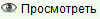
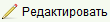

Форма поиска документов позволять искать необходимые документы по заданным критериям поиска для дальнейшего просмотри или редактирования.
Вы можете открыть форму поиска из главного меню Поиск > Поиск документов или щелкнув на кнопку панели инструментов
 Поиск документов.
Поиск документов.
Вы можете осуществлять поиск используя комбинацию параметров таких как номер документа, локальный номер (присвоенный регистрационным офисом), тип документа,
интервал даты подачи, интервал даты документа, источник документа (название организации, создавшей документ), описание.
Номер документа, локальный номер, источник и описание документа поддерживают частичное совпадение.
Для просмотра полной информации о документе, выберите его в списке и нажмите кнопку

Для редактирования нажмите кнопку 
Если документ привязан к заявлению, вы можете открыть его щелкнув на кнопку 
Вы также можете распечатать документ, выбрав его из списка и нажав кнопку